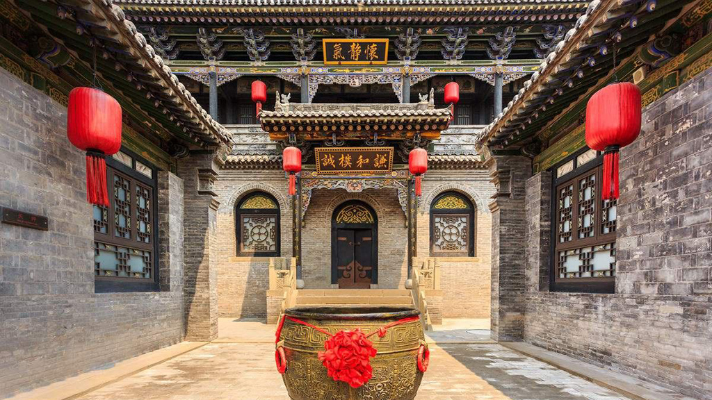
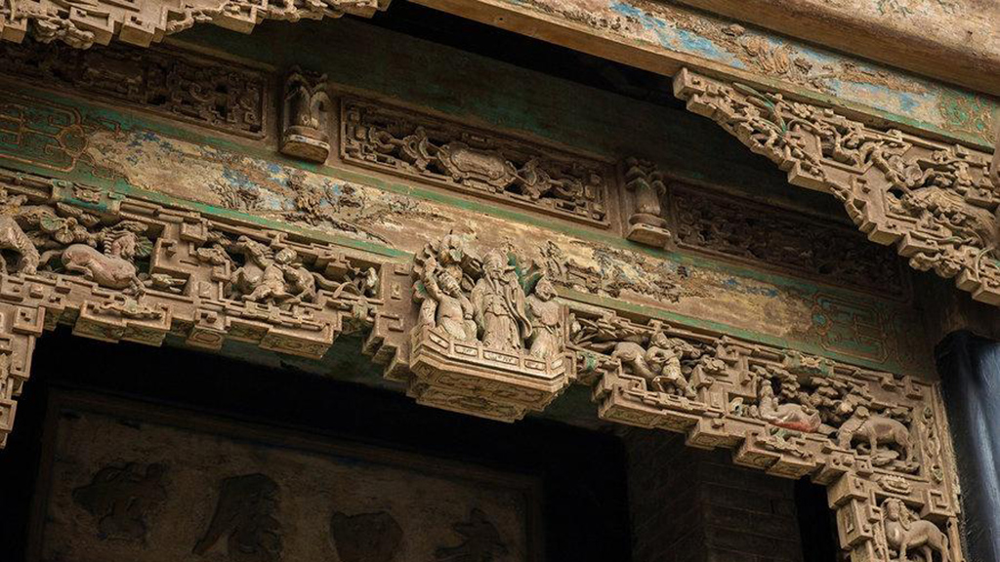
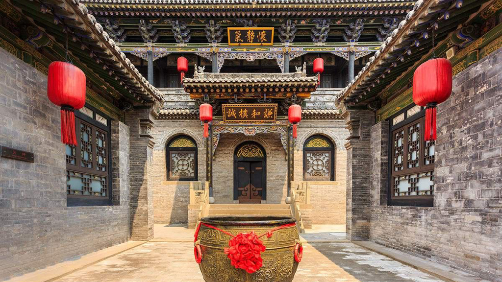
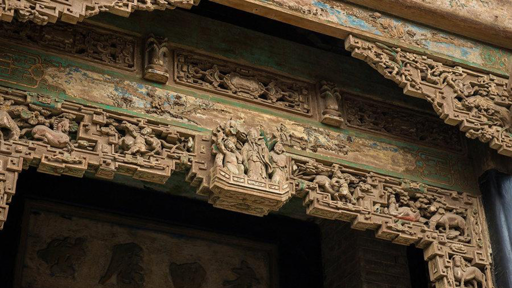

Phone: 86-18635140903
Address: NO.699 Longhu Street, Yuci Diatrict, Jinzhong, Shanxi（Click to open the map)Jinzhong Meiyu International Hotel is situated in the core area of the Northern New City in Jinzhong City, along the Longhu Avenue Expressway. Adjacent to Wanda Plaza and the Outlets commercial district, it is approximately a 12-minute drive from the Wusu Expressway Hub. This hotel serves as an ideal venue for hosting large-scale conferences, banquets, and business negotiation activities
Versatile Excellence: The pillar-free Meiyu Grand Ballroom, with its soaring 10-meter ceiling, elegantly accommodates high-end banquets or conferences for 600-1,000 guests. Additionally, 12 flexible function rooms of varying sizes cater to events of all scales. Equipped with cutting-edge audiovisual technology and supported by our seasoned butler-style service team, we deliver meticulous, professional coordination to ensure every occasion is flawlessly executed.
Lingering Charm: On the second floor, the hotel houses 15 private dining rooms at **Weixiangyuan Chinese Restaurant** (capacity: 5-30 guests), along with **Marco Polo Western Restaurant**, while the 25th-floor executive lounge offers refined ambiance and exquisite cuisine. Guests can savor distinctive culinary styles here—from the bold flavors of Hunan & Sichuan to the hearty Shanxi fare and delicate Cantonese dishes.
Black Myth: Wukong and Shanxi
The creative inspiration for Black Myth: Wukong largely originates from the profound cultural heritage of Shanxi. The game scenes blend seamlessly with the ancient architecture and mythological tales of Shanxi, taking you on a journey to explore the beauty of Eastern fantasy.
Transportation Guide
From Taiyuan Wusu Airport
- Way1: You can take a taxi directly from Taiyuan Wusu Airport to Jinzhong Meiyu International Hotel, with an estimated travel time of 30 minutes.
- Way2: Take Bus 201 from the airport terminal bus stop, get off at the Taiyulu Rongjun Nanjiekou bus stop, then transfer to Special Bus 2/Bethune Hospital Line, and get off at Longhujie Xinjian Lukou bus stop. Walk 332 meters to reach Jinzhong Meiyu International Hotel. The entire journey takes approximately 1 hour and 20 minutes.
- Way3: Take Bus G4 from the airport terminal bus stop, get off at Nanzhonghuan Metro Station bus stop, then transfer to Special Bus 2/Bethune Hospital Line, and get off at Longhujie Xinjian Lukou bus stop. Walk 332 meters to reach Jinzhong Meiyu International Hotel. The entire journey takes approximately 1 hour and 45 minutes.
From Taiyuan Railway Station
- Way1: You can take a taxi directly from Taiyuan South Railway Station to Jinzhong Meiyu International Hotel, with an estimated travel time of 20 minutes.
- Way2: Take Special Bus 2/Bethune Hospital Line from Taiyuan South Railway Station bus stop, get off directly at Longhujie Xinjian Lukou bus stop, and walk 332 meters to reach Jinzhong Meiyu International Hotel. The entire journey takes approximately 1 hour.
- Way3: Take Bus K903/903 Main Line from Taiyuan South Railway Station bus stop, get off at Shanxi Vocational University of Engineering Science and Technology South Gate East bus stop, then transfer to Bus 11, and get off at Jinzhong Wanda Plaza West Jinyuan bus stop. Walk 332 meters to reach Jinzhong Meiyu International Hotel. The entire journey takes approximately 1 hour and 20 minutes.
From Jinzhong Railway Station
- Way1: You can take a taxi directly from Taiyuan South Railway Station to Jinzhong Meiyu International Hotel, with an estimated travel time of 20 minutes.
- Way2: Take Bus 201 from Jinzhong Railway Station bus stop, get off at Yijia Home Furnishing East bus stop, then transfer to Bus 11 from Yujing Residential Area bus stop, and get off at Jinzhong Wanda Plaza West Jinyuan bus stop. Walk 332 meters to reach Jinzhong Meiyu International Hotel. The entire journey takes approximately 1 hour and 10 minutes.
Local Attractions


Jinci Temple
A royal sacrificial garden in Taiyuan,Shanxi,with a long history and exquisite architecture.
Wutai Mountain
A Buddhist holy land in Xinzhou,Shanxi,one of China's Four Sacred Mountains,known for its temples and scenic beauty.
 



Qiao Family Compound
A cluster of ancient buildings from the Ming and Qing dynasties in Qixian,Shanxi,showcasing the essence of Jin merchant culture.
Practical Information
Conference Service Desk
Email:cw2025@tyut.edu.cn
Weather
Average temperature in October: 15-20°C
It is recommended to bring a light jacket.
Currency
Renminbi and Dollar
Credit cards are accepted at most places.
Emergency Contacts
Police: 110
Ambulance: 120
Security Department(tyut):+86 0351-6010350
School hospital:+86 0351-6010690